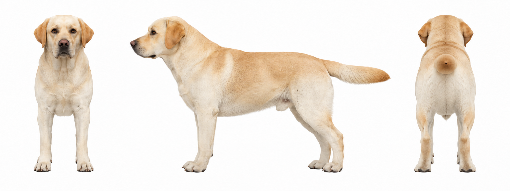
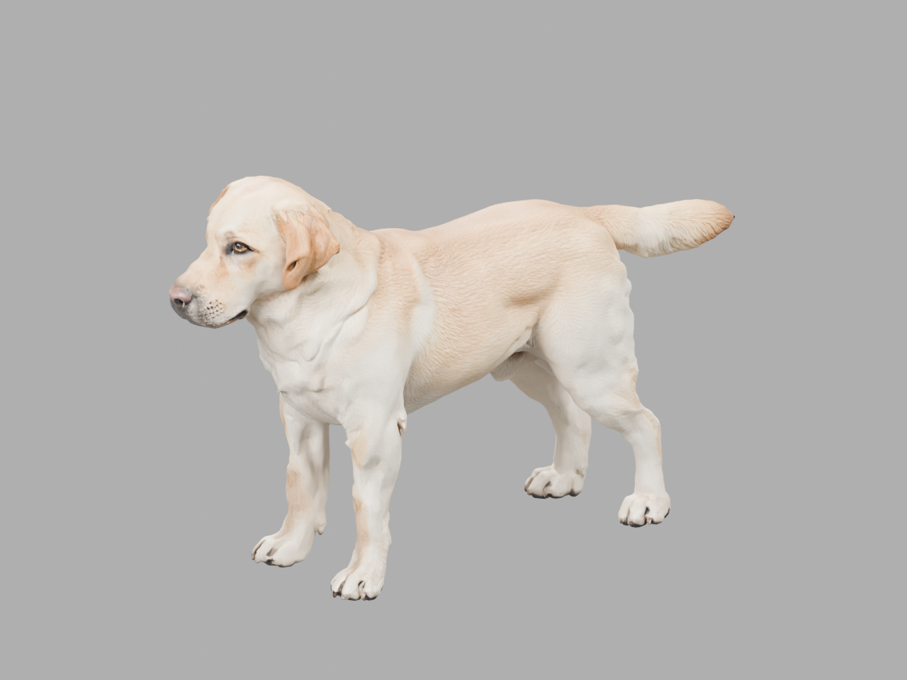
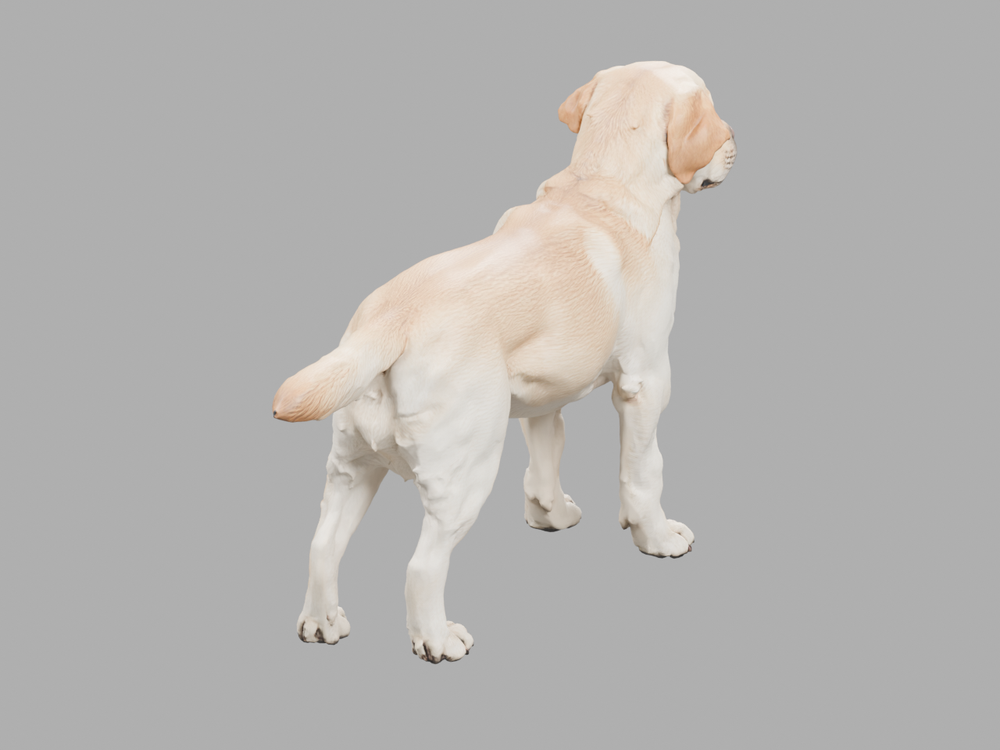
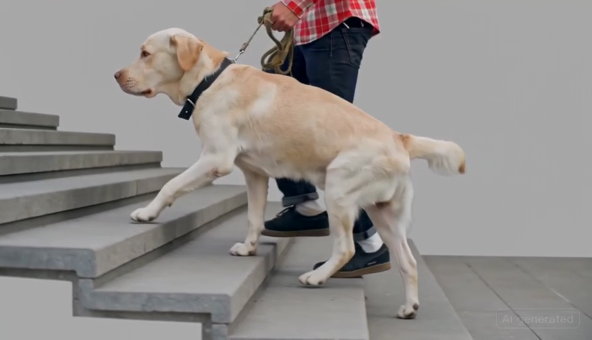
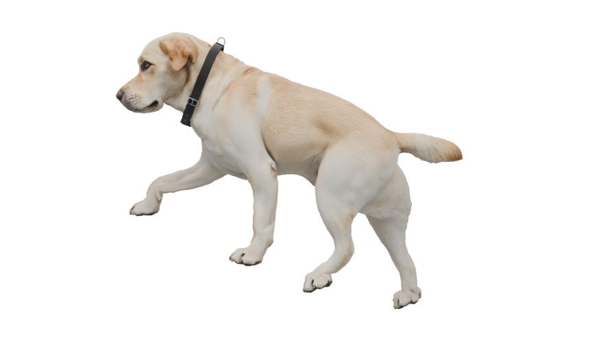
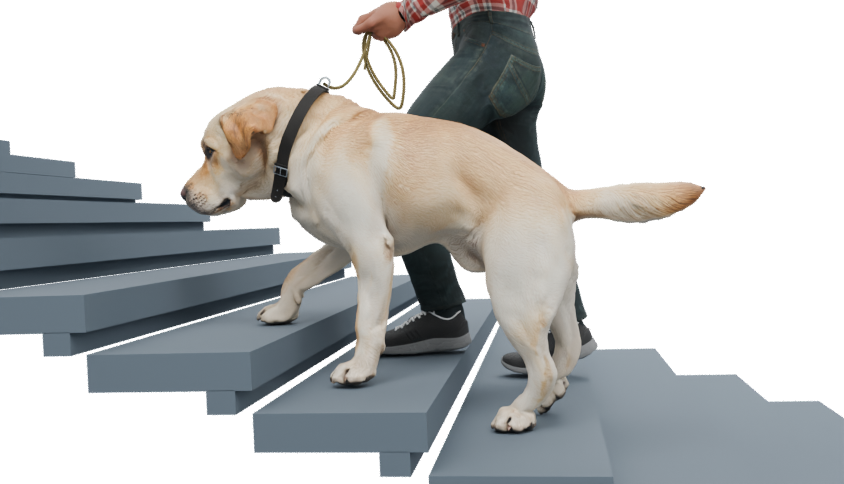
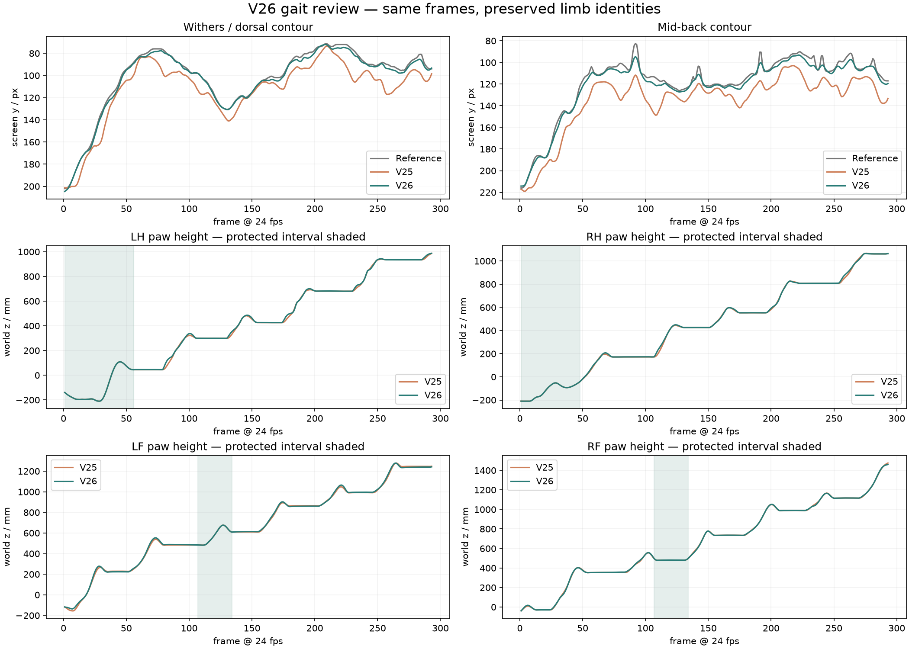

Character motion
from video
This is an AI-assisted workflow for turning filmed dog and handler motion into editable quadruped and MetaHuman animation for Unreal Engine. I am developing it as a reusable animation production capability: as large language models become more capable and the cost per token falls, more of the pipeline can be automated while artists retain control over performance and quality.
Dog and simulated leash · Animation preview. The MetaHuman handler is in progress.
Testing an editable video-to-animation workflow
The question was whether AI could accelerate the early reference and asset stages while leaving character motion editable, inspectable, and suitable for an Unreal Engine pipeline.
I started from filmed motion of a dog and its handler on stairs. A generated side-view sequence gave me a clearer reference for the dog, while the human performance is being matched to a MetaHuman character. I treat generated frames as a guide to review, not as measured 3D motion.
View original filmed referencePond5 · samuraisunshine · Item 79772580From multiview reference to a usable rig
The dog began as generated multiview reference and a 3D model. I refined the quadruped rig, skin weights, paw joints, body proportions, and deformation through repeated pose checks.



Problems the workflow had to solve


A generated video is not motion data
The side-view sequence clarified the gait but did not provide reliable 3D joints or camera measurements. I reconstructed the camera and stairs and compared the character against the reference at matching frames.
An automatic rig still needs anatomy
The generated mesh and quadruped rig gave me a starting point. I revised paw and leg weights, neck deformation, and collar behavior so the character could carry the intended poses.
Stairs expose foot sliding
I refined gait timing, body motion, and paw targets with IK, then checked contacts between frames. The goal was to preserve the walk's weight transfer without stretching the limb bones.
Visual review needs a repeatable check
Python-assisted landmark and clearance checks helped identify silhouette drift and paw intersections across the 24 fps sequence. I used those findings to guide the next animation pass.
Bringing the handler into the same scene
I am matching the handler's stair motion to a MetaHuman character, including foot contact, pelvis motion, hand position, and leash interaction. The dog and MetaHuman now share an editable scene for timing and composition review.
The MetaHuman animation has been reimported and checked on the original MetaHuman skeleton in a separate Unreal Engine test project.

Use the comparison to make a decision
In one intermediate gait pass, average error at three visible back-line landmarks fell from 16.4 to 5.7 pixels while protected paw motion was preserved. I checked the same frames visually as well as through plotted body and paw curves.
These are image-space measurements for this shot, not 3D ground truth or a final quality score.

AI collaboration needs an editable result
Generative models supplied candidate views and motion. GPT-6 Astra assisted with Blender and Python tooling for repetitive setup and diagnostics. I chose the references, directed the animation, corrected anatomy and contact, and approved each version through visual and measured review.
This points to a practical production loop: generate a candidate, build an editable scene, test it against clear constraints, and make a directed correction. The dog can be exported to Unreal Engine as a Geometry Cache or rigged Skeletal Mesh; the MetaHuman animation has a validated FBX path back to its Unreal skeleton.